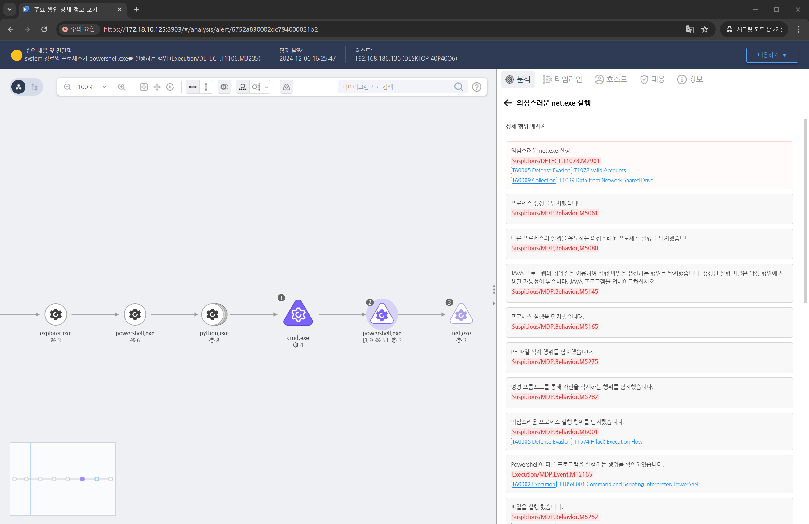

MITRE ATT&CK 액션을 기준으로 대응 방안을 작성
powershell.exe가 net.exe를 실행하는 행위를 탐지합니다.

공유 드라이브에 대한 접근 시도를 기록하도록 설정합니다
대량 파일 복사 및 비정상적인 시간대의 접근에 대한 모니터링을 설정합니다.
Splunk, Microsoft Sentinel 등 SIEM 도구를 통해 SMB 관련 이벤트를 실시간으로 모니터링합니다.
네트워크 패킷 분석 도구(Wireshark, Zeek 등)를 사용해 SMB 트래픽에서 의심스러운 파일 다운로드 활동을 탐지합니다.
동일한 사용자 계정으로 여러 시스템에서 동시 접근 시도를 확인합니다(공격자가 크리덴셜을 탈취했을 가능성).
네트워크 공유 권한 제한
SMB 보안 강화
네트워크 접근 제어
암호화 사용
DLP(Data Loss Prevention) 도구 활용
Action 실행시 함께 영향을 받는 다른 Techniqes
| ATT&CK |
|---|
| T1039 |
| D3FEND |
|---|
| D3-FCA File Creation Analysis |
| D3-FIM File Integrity Monitoring |
| D3-PLA Process Lineage Analysis |
| D3-NTF Network Traffic Filtering |